Glass Cielings is an exploration of vulnerability within limiting constructs. For viewing both with and without anaglyph 3D glasses.
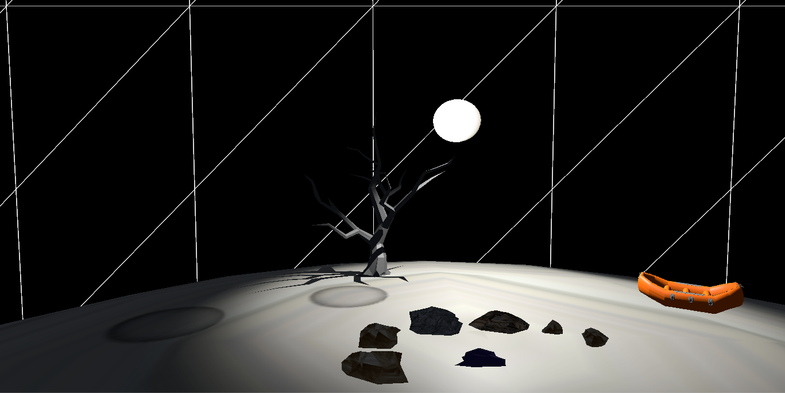
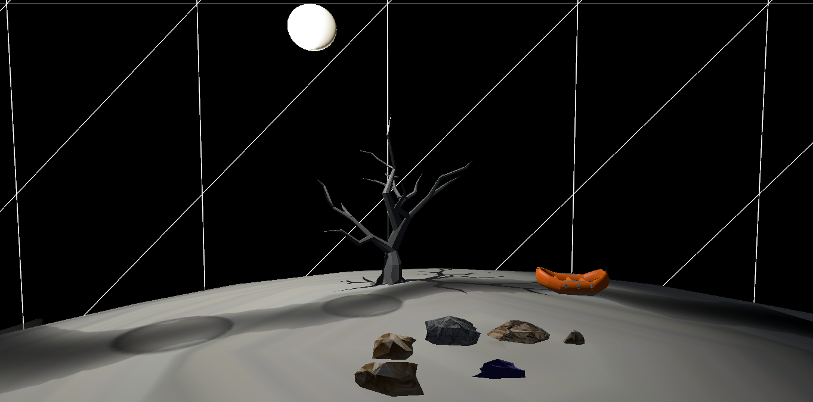
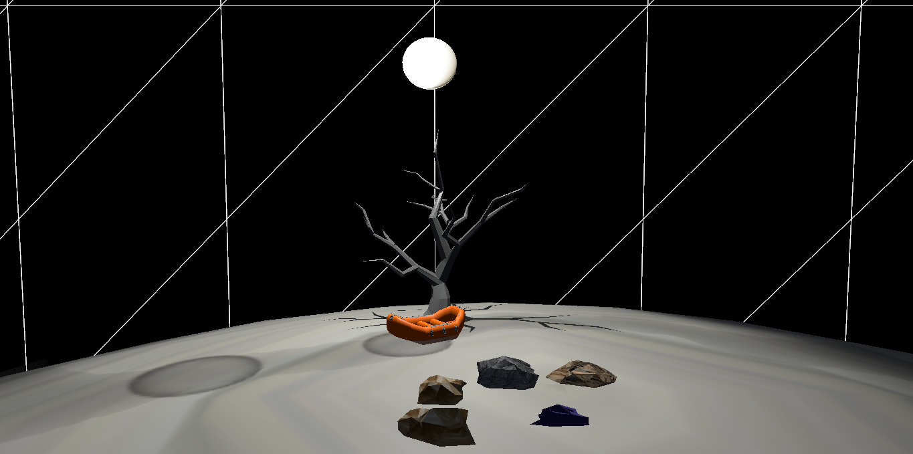
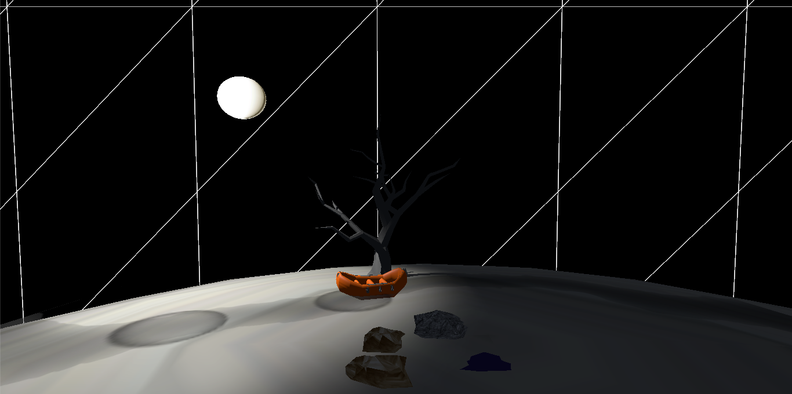
Shadow River Requiem is a reflection on nature and river ecology. When the
sun casts shade from a tree onto the river bed, a life raft floats
forward along the shadow river. A seven day clock made of rocks (the rock clock)
tracks the passage of time and includes a special boulder to reverse time and scratch the sun.
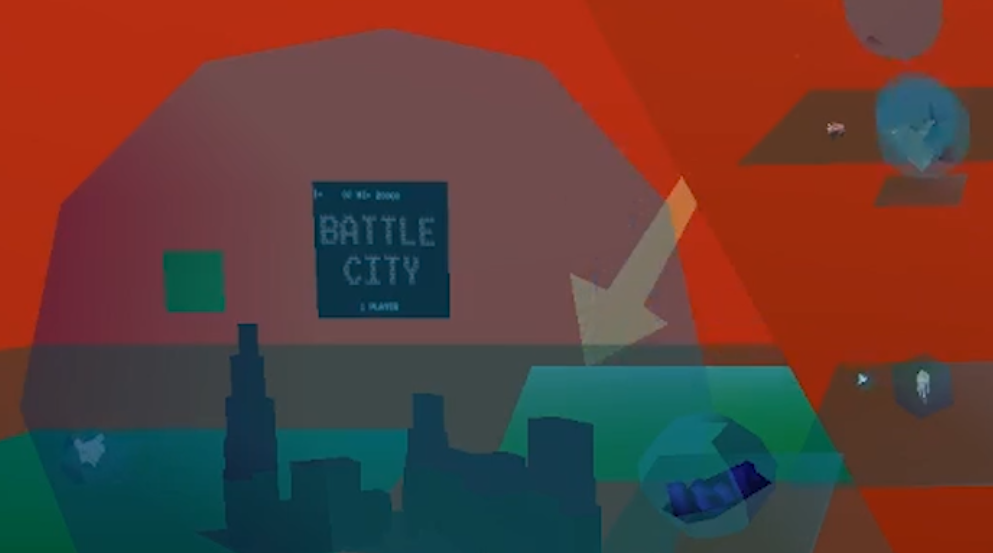
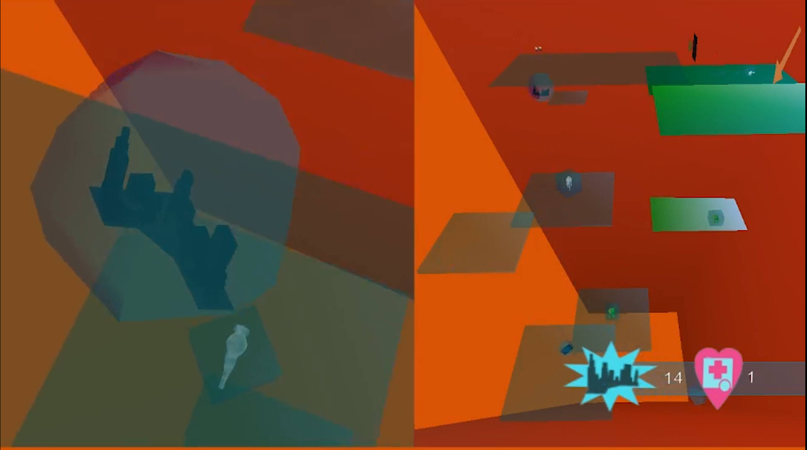
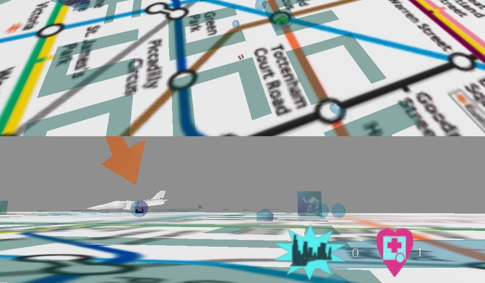
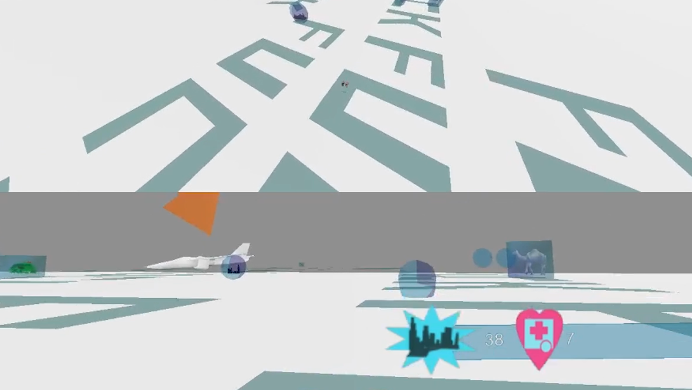
B_Cities players navigate vertical and horizontal split screen perspectives, rolling through
three city levels. In 3D and at the same time 2D, they collect items and regenerate lives while avoiding dangers.
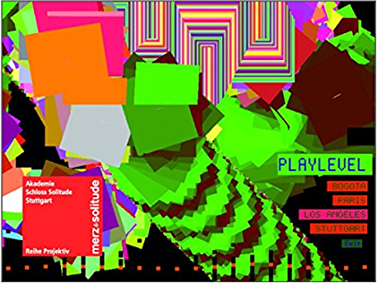
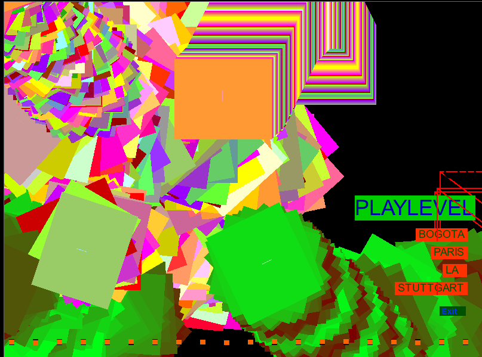
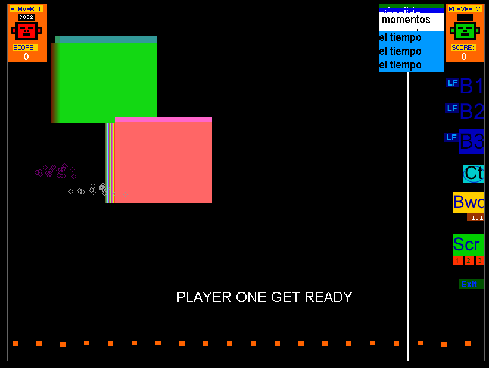
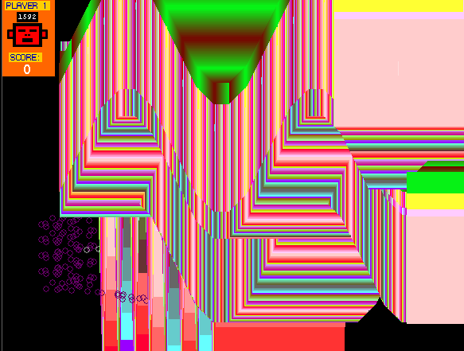
Heaven@711 is a hip hop rhyming game with musical beat modulation software and abstract visuals. Beats and corresponding visuals can be scratched and reversed in time.
Women artists from four different nations wrote songs for the levels.